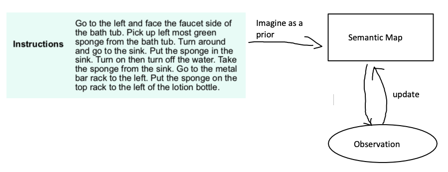
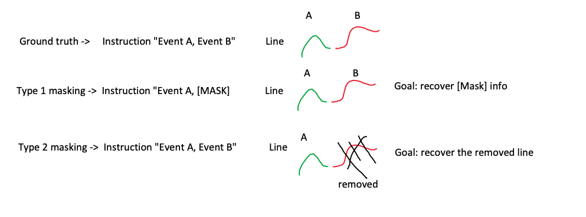
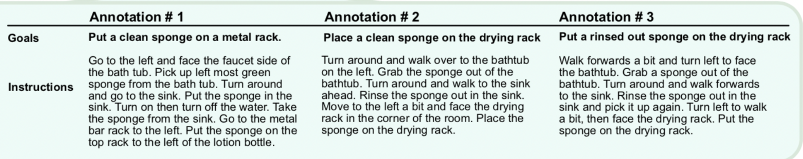

Previous Work Review#
We will work on the two projects
- ALFRED environment
- Visualise planned path as a line
You need password to access to the content, go to Slack *#phdsukai to find more.
Part of this article is encrypted with password:
--- DON'T MODIFY THIS LINE ---
[TOC]
TODO List#
- wait for ServiceNow people to give us their code (otherwise check the FILM first)
ALFRED Notes#
Symbols
- $G$ : goal
- $a$: action
- $V$: vision
- $Sem$: Semantic map
- $L_h$: high-level language (goal description)
- $L_l$: low-level language (instructions)
Current Module Math Representation
- $p_\theta(Sem | V)$: vision module
- $p_\delta(G|L_h)$: Language module
- $p_\phi(a|G,Sem)$: Planning module
Updated version of the modules using low-level instructions
- (vision module) $p_\theta(Sem | V) \implies p_\theta(Sem | V, L_l)$ : we use low-level instructions to provide a prior estimation of the semantic map

- (language module) $p_\delta(G|L_h) \implies p_\delta(G|L_h, L_l)$ : low-level instructions give information about subgoals, thus it can help to judge whether the plans generated from the planner is correct
- (planning module) $p_\phi(a|G,Sem) \implies p_\phi(a|G,Sem,L_l)$ : low-level instructions reveal action, object and temporal constraints to shape agent’s behaviour
How to characterise this work#
- (Vision module) Large Language Models (LLMs) trained on large text corpora encode rich distributional information about real-world environments and action sequences. By utilising the prior knowledge extracted from LLMs, we can improve neural symbolic agents significantly.
- (Language module) low-level instructions give information about subgoals. Thus, we can relate the work to goal of subgoal recognition, I think Nir had some research on it
- (Planning module) we can say this work continues the previous work that treat natural language instructions as a group of action, state and temporal constraints and we generate plans/action that fulfil the constraints.
Visualise planned path as a line#
Motivation#
- In the problem of visual language navigation (VLN), rather than optimising agents’ policies on the action domain, we propose directly optimising lines that represent the agents’ trajectories. Visualising trajectories / paths as lines helps to improve the comprehension of models’ decision-making process. Moreover, we find that the new approach may be capable of handling longer instructions as it can avoid cumulative rollout errors from single-step decisions that are often encountered in standard reinforcement learning approaches.
Method#
- we use a sequential array of points to represent a line
- detail about generating the line
- Initialisation step
- based on the natural language instruction, the agent predict
- the start point
- the end point
- length of the line (i.e., number of points)
- based on the natural language instruction, the agent predict
- construction step
- sample the intermediate points but with the following constraints
- # total points match with the length value
- distance between neighbour points $d(p_n, p_m)$ is set in a predefined range
- sample the intermediate points but with the following constraints
- refinement step
- gradually modify (“diffuse”) all the points based on the language instruction
- Initialisation step
- once we generate the line, we ask the agent to follow it
How to train the model
- besides a direct supervised learning method, we can also mask out some sub-sentences or line segment and ask the agent to recover the mask out information

How to deal with environment change
- The model is essentially plan-based because the agent generate a plan represented as a line and then follow it.
- But the plan may be outdated if there is a environment change (e.g., change of dungeon room or NPC moves)
- To update the path plan while maintaining the consistency of the previous decision, we will re-update the line segment when the background behind that line segment is changed. This update process is similar to recovering the masked line segments
Other ideas#

- How to use different instructions together to mitigate ambiguity?
- How to ensure that we finish the subgoals?
Appendix#
Recall our research plan#

- We said before that we may want to focus on the abstraction level of natural language texts
- In ALFRED we have high-level goal text and the corresponding low-level instructions.
- here are some questions
- Which approach is better – fine-tuning two separate language models to handle texts with different abstraction levels vs. fine-tuning just one shared language model?
- goal text is independent from the current task environment, while the low-level instructions is dependent on the environment
- Low-level Instruction $\implies$ goal text
- goal text + floor plan $\implies$ low-level instruction
- how can we utilise this feature to enhance the few-shot learning ability of the model so that it can obtain higher success rate in unseen tasks?
Paper Reading Notes#
-
Towards Tracing Factual Knowledge in Language Models Back to the Training Data
- Author: Ekin Akyurek et. al.
- Publish Year: EMNLP 2022
- Review Date: Wed, Feb 8, 2023
-
Unifying Structure Reasoning and Language Model Pre Training for Complex Reasoning
- Author: Siyuan Wang et. al.
- Publish Year: 21 Jan 2023
- Review Date: Wed, Feb 8, 2023
-
Multimodal Chain of Thought Reasoning in Language Models
- Author: Zhuosheng Zhang et. al.
- Publish Year: 2023
- Review Date: Wed, Feb 8, 2023
-
LAMMP Language Models as Probabilistic Priors for Perception and Action 2023
- Author: Belinda Z. Li, Jacob Andreas et. al.
- Publish Year: 3 Feb 2023
- Review Date: Fri, Feb 10, 2023
-
Contrastive Instruction Trajectory Learning for Vision Language Navigation
- Author: Xiwen Liang et. al.
- Publish Year: AAAI 2022
- Review Date: Fri, Feb 10, 2023